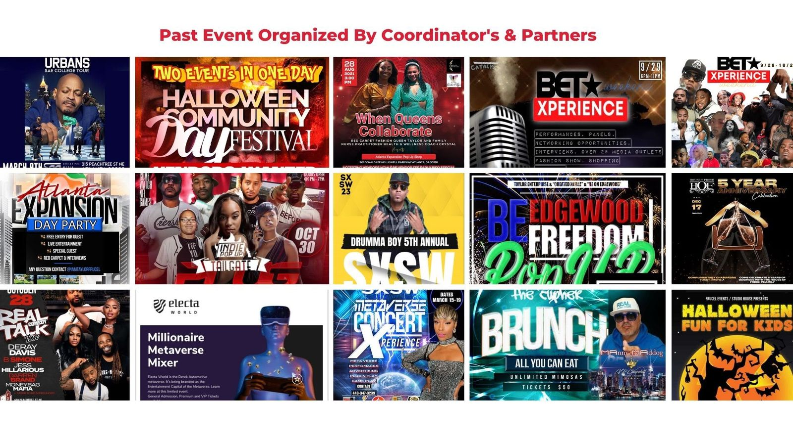
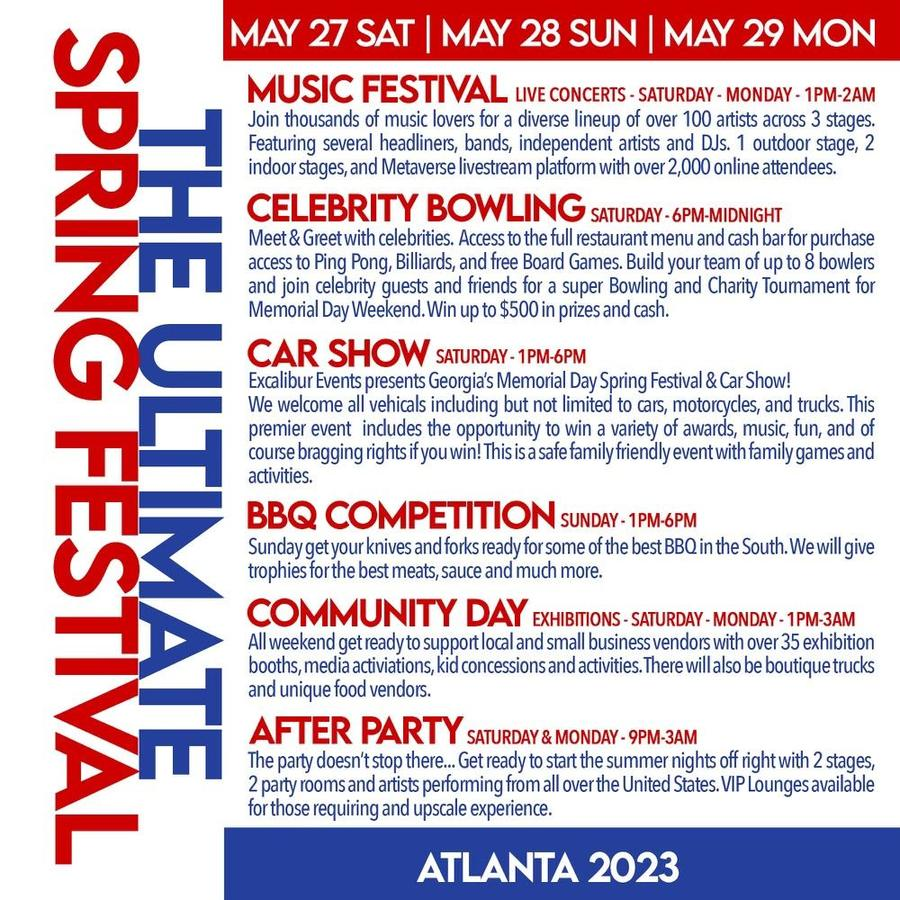
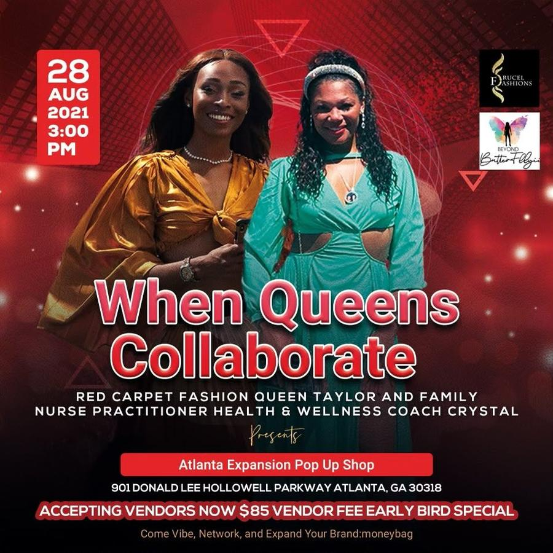
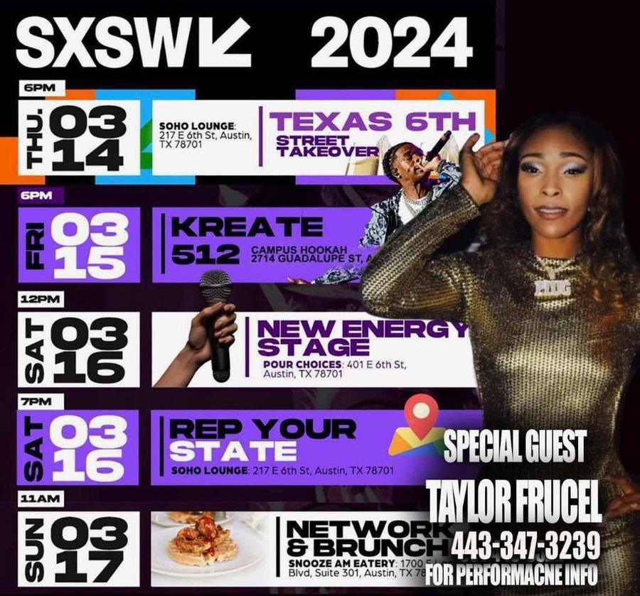
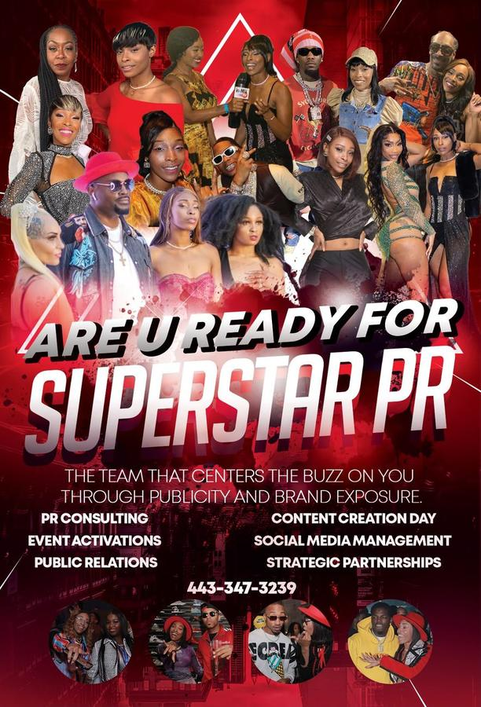

Grammy Season: Culture & Connection.
A gathering for creatives, entertainment professionals and culture-minded guests.

What’s happening
The 69th Annual GRAMMY Awards take place on February 7, 2027. Taylor Success Enterprise is creating a separate experience around that awards season, bringing people together for conversation, culture and meaningful connections. Follow our Eventbrite page for dates, venue and registration as they are released.
Grammy season · February 2027
Creatives & entertainment professionals
Through our Eventbrite page
An independent event by Taylor Success Enterprise, not affiliated with the Recording Academy.

Find me on Eventbrite.
Every upcoming event, ticket and registration lives on my Eventbrite page.
Posters from the portfolio.
From the Ultimate Spring Festival and When Queens Collaborate to the Atlanta World Cup Experience Series: events I’ve produced, promoted and shown up for.



